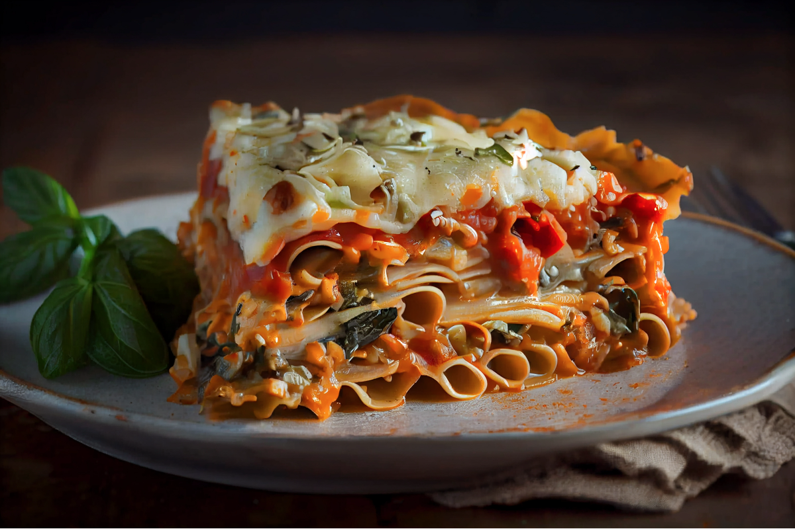

Lasagna
Home

Ingredients Needed
- Cheese - 200 grams
- Tomatoes - 100 grams
- Pistachio - 60 grams
- Olive Oil - 30 ml
- Lasagne Pasta Slices - 340 grams
Cooking Instructions and Steps
- Heat pan to medium heat
- Pour 2 cups of clean water into pan and let boil
- Gently place lasagna pasta slices into the pan to soften pasta slices
- Drain soft lasagne pasta slices after 8 minutes in boiling water
- Pour olive oil into pan and let simmer for two minutes
- Mix tomato and pistachio into a pasty texture and add into pan with olive oil
- Let cook on medium heat for 6 minutes to become lasagne sauce
- Prepare lasagne pasta slices on baking tray and drain lasagne sauce from pan between layers of lasagne pasta slices
- Add cheese and desired spices to the topmost layer of lasagna pasta slices
- Place baking tray into oven on 190 degrees celcius for 60 minutes until meal is fully cooked
- Enjoy!